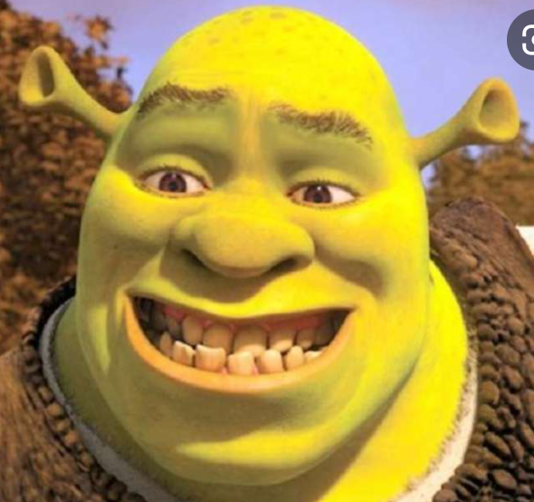
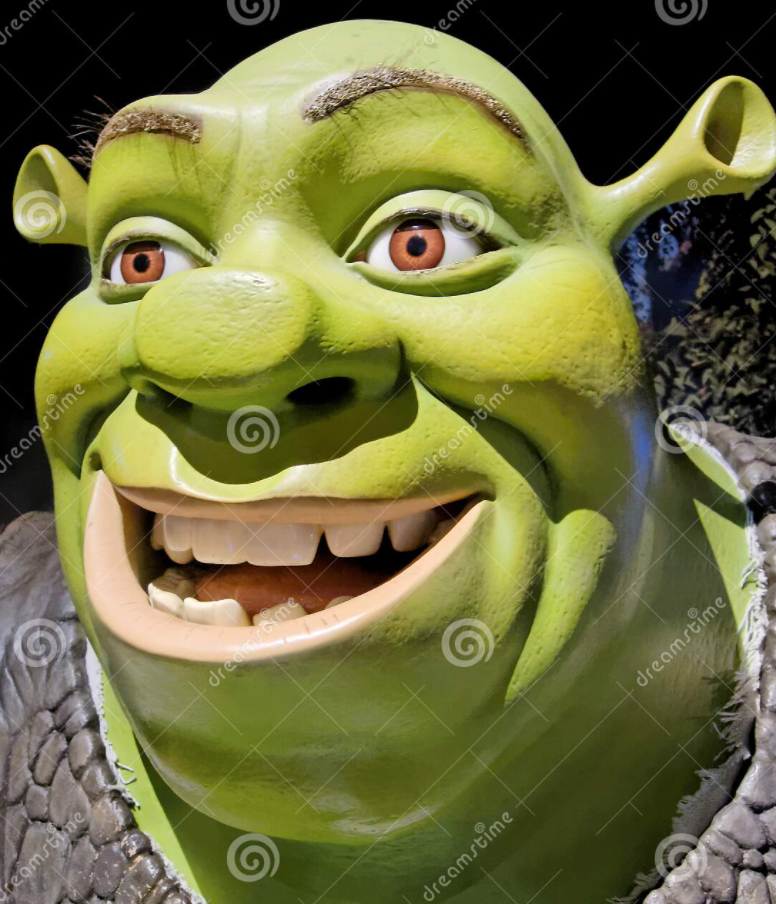
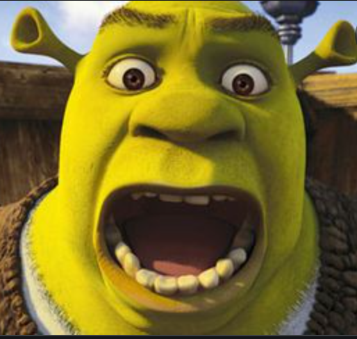
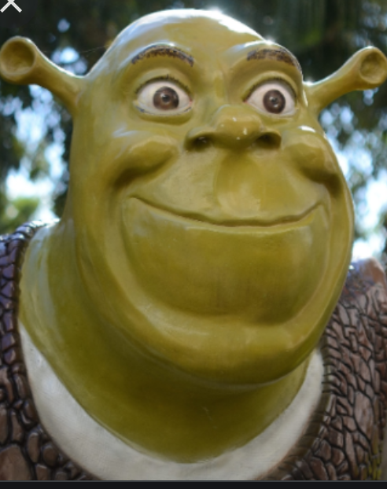
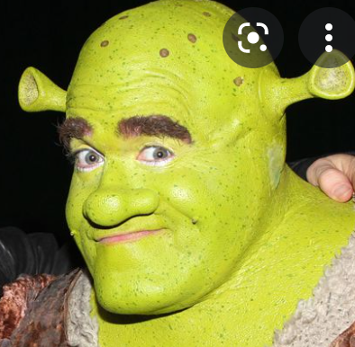
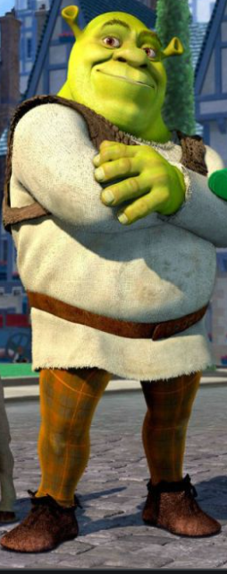
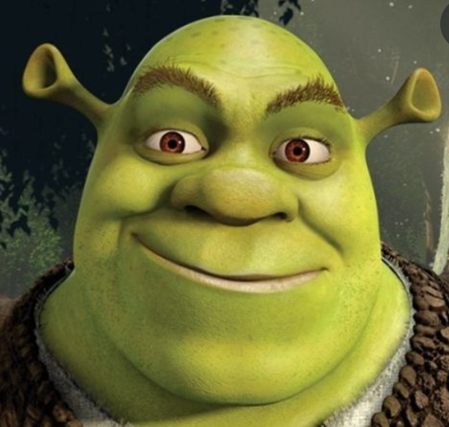

<!DOCTYPE html>
<html>
  <head>
    <title>Games</title>
    <meta charset="utf-8">
    <meta http-equiv="X-UA-Compatible" content="IE=edge">
    <meta name="viewport" content="width=device-width, maximum-scale=1.0, user-scalable=no">
    <link rel="stylesheet" href="https://fonts.googleapis.com/css?family=Lato:400,400i,700,700i|Oswald:400,500,600,700&amp;display=swap">
    <link rel="stylesheet" href="../css/ejercicio-sass.css">
    <script src="https://kit.fontawesome.com/552ebddad2.js"></script>
  </head>
  <body></body>
</html>
<main>
  <section class="perfil">
    <h2 class="perfil__nombre">Shrek</h2>
    <h3 class="perfil__titulo">Un loquillo</h3><a class="perfil__boton" href="#">Seguir</a>
    <div class="estadistica--perfil">
      <div class="estadistica_elemento">
        <h3>420k</h3><span>Seguidores</span>
      </div>
      <div class="estadistica_elemento">
        <h3>69k</h3><span>Siguiendo</span>
      </div>
      <div class="estadistica_elemento">
        <h3>101</h3><span>Articulos</span>
      </div>
    </div>
    <div class="perfil__minibio">
      <h2>Acerca de Mi</h2>
      <h3>Soy un ogro verde, gruñón, es altamente territorial que ama la soledad.</h3>
    </div>
    <div class="ubicacion--perfil"><i class="fas fa-map-marker-alt"></i>
      <h2>The Swamp</h2>
      <h3>100km Cerca</h3>
    </div>
    <div class="galeria">
      <h2>Mis Fotos</h2>
      <div class="galeria__foto-principal"></div>
      <div class="galeria__fotos-adicionales"></div>
    </div>
  </section>
  <aside class="amigos">
    <p>fiona</p>
    <p></p>
    <p></p>
  </aside>
</main>